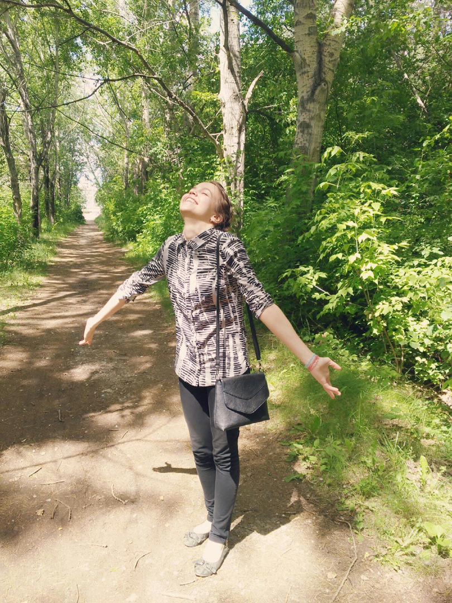
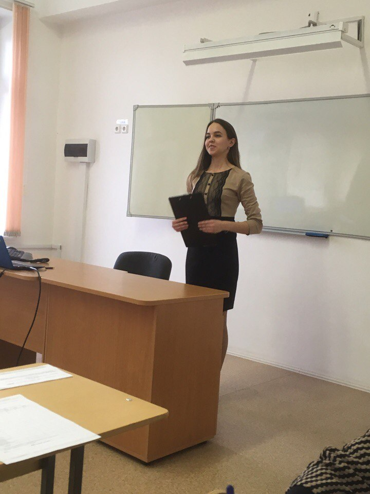
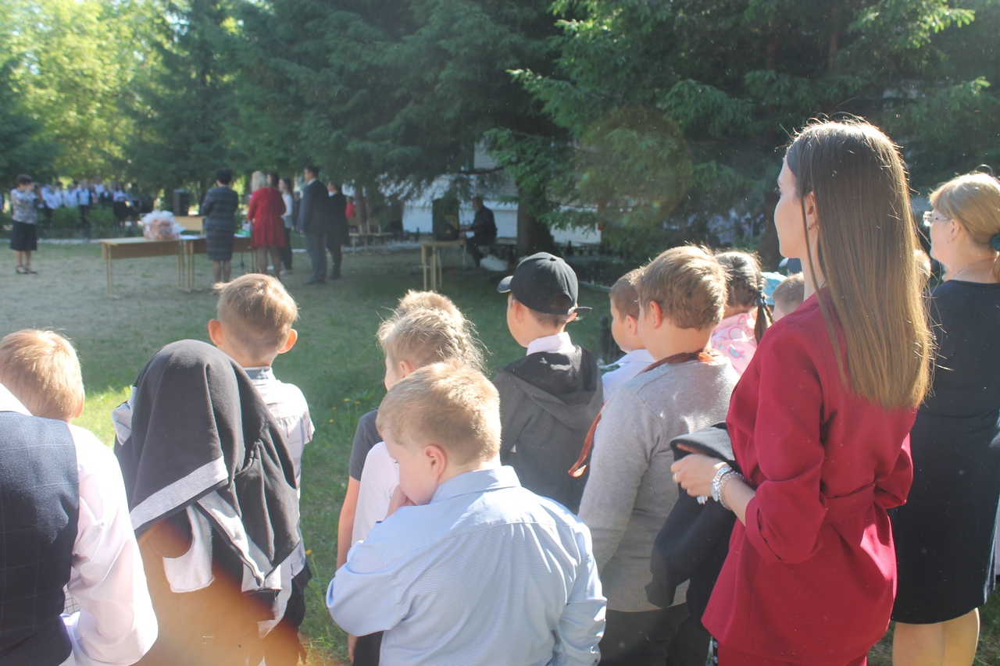
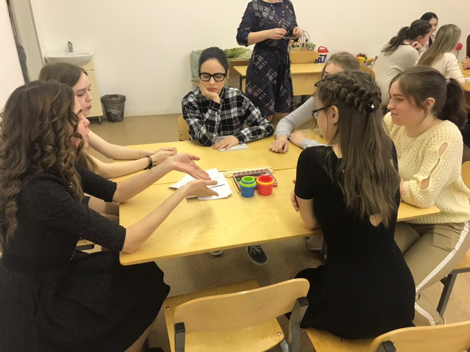
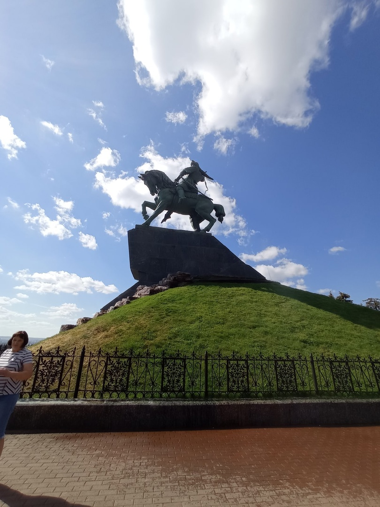
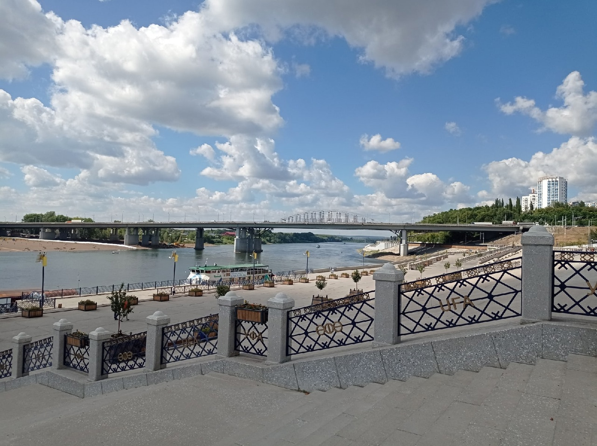
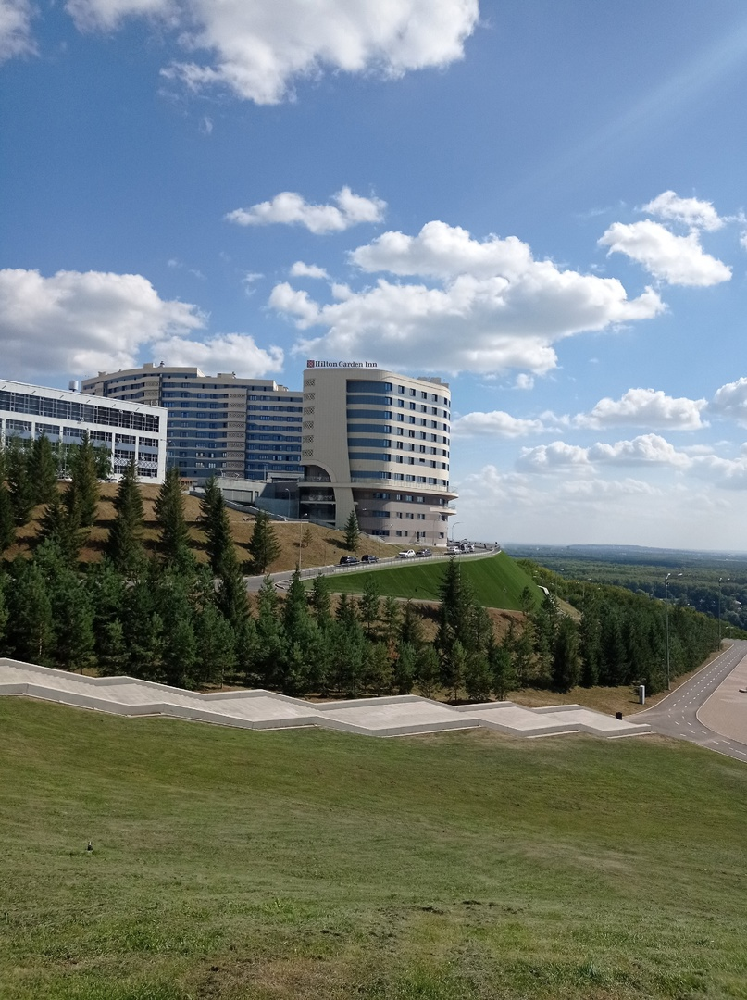
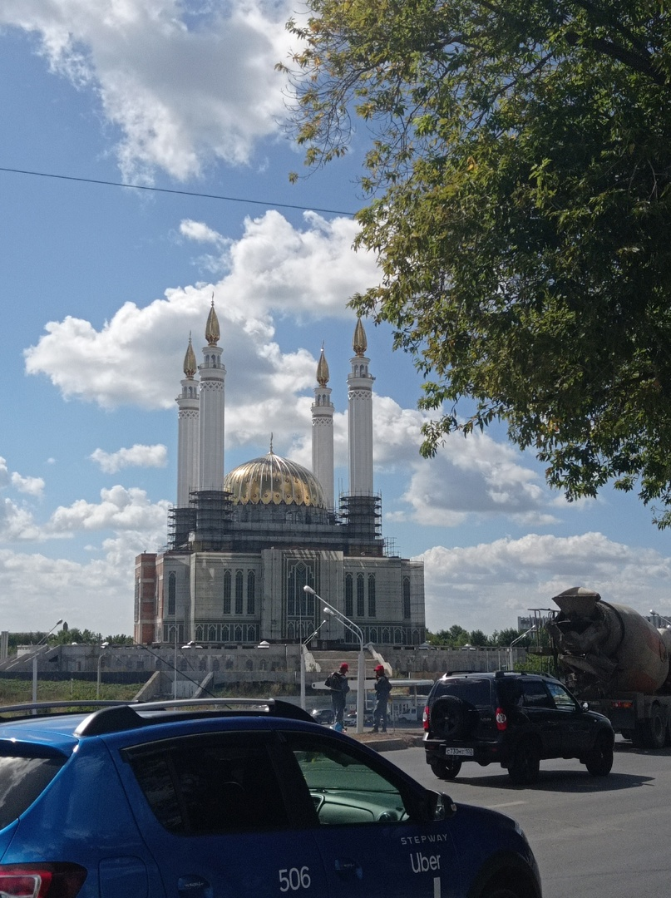
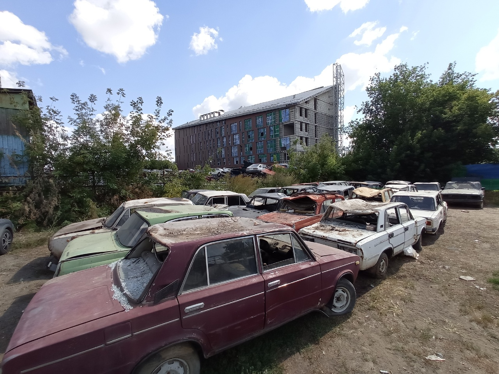

Моя первая web-страница
Про меня
   
Меня зовут Мари. Я работаю учителем. Решила сменить род деятельности, чтобы осуществить свою мечту - путешествие без привязанности к местности.
    
Живу в Каменске-Уральском. Люблю гулять в лесу и кататься на велосипеде. А чтение книг приносит максимальное удовольствие.
Чему я хочу научиться?
На данном курсе я хотела бы научиться создавать сайты с нуля. Пока у меня не очень получается... Но я не планирую на этом останавливаться!